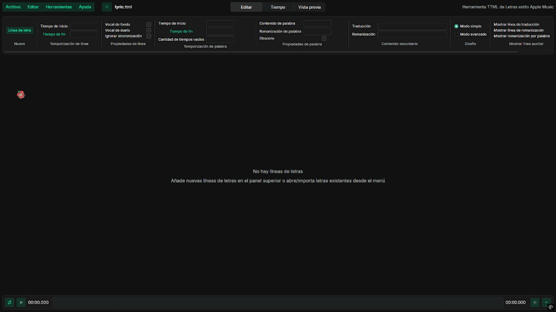
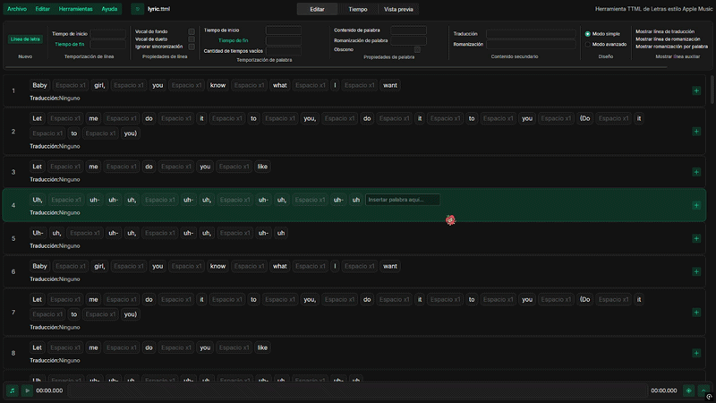

Guía para crear letras sincronizadas para Cloud
En esta guía podrás aprender cómo sincronizar las letras de las canciones de manera muy fácil.
 Creada por Sam!Última edición: 11 de agosto de 2026
Creada por Sam!Última edición: 11 de agosto de 2026
Necesitarás el audio de la canción, sus letras y la herramienta AMll TTML. El proceso se realiza desde tu navegador y los archivos permanecen en tu equipo.
Descarga la canción
Copia el enlace de la canción desde una plataforma musical. Recomendamos Spotify porque permite encontrarla fácilmente. Después, abre SpotiDown, pega el enlace y descarga la canción.
Obtén las letras
Pega el enlace de la canción en la herramienta de preparación de letras y copia el texto generado con los separadores /.
Importa las letras
Abre AMll TTML Tool y sigue estos pasos:
- Dirígete al botón Archivo.
- Selecciona Importar letras.
- Elige Importar desde texto plano.
- Pega las letras generadas y pulsa Importar.

Importa la música
Una vez importadas las letras, haz clic en el botón de nota musical ubicado en la esquina inferior izquierda y selecciona el archivo de música que descargaste.
